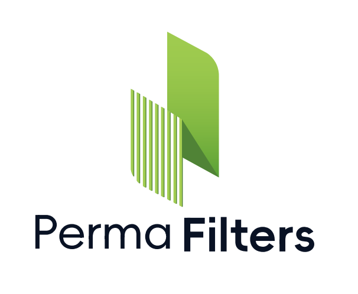

2019｜美國 Smuttynose 啤酒廠
Thetis 原廠案例記載：2019 年投運，以 PermaFlux™ V8 處理啤酒廠厭氧消化液的固液分離。
Thetis 原廠啤酒廠案例 ↗
OUR REPRESENTED BRAND
Thetis Environmental 位於加拿大 Hamilton，專注高濃度、高固體含量廢水的錯流超濾與 PermaFlux 膜分離技術。Perma Filter（原廠名稱 Perma Filters）為 Thetis 的亞洲市場品牌；承信提供其 UF、MBR 膜組件及 PermaFlux 固液分離產品的洽詢與選用討論。
Thetis 原廠案例記載：2019 年投運，以 PermaFlux™ V8 處理啤酒廠厭氧消化液的固液分離。
Thetis 原廠啤酒廠案例 ↗Thetis 原廠案例記載：2022 年投運，以 PermaFlux™ V10XL 銜接油氣廢水的石灰軟化程序，進行後續固液分離。
Thetis 原廠石灰軟化案例 ↗認識承信代理的系列與型號；實際供應內容與配置，歡迎直接洽詢。